CS180 · Project 02 · Fall 2026 · Carl Djapardi
Fun with Filters
and Frequencies!
The goal of this project is to explore how an image changes when we separate its smooth structure from its fine details. I start with convolution and edge detection, then use those ideas to sharpen images, create hybrids, and blend different scenes.
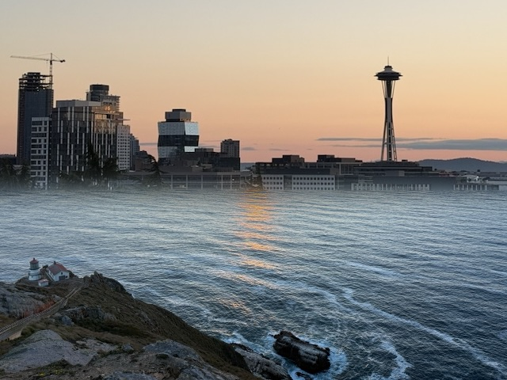
Part 1 / Fun with filters
Convolutions from scratch
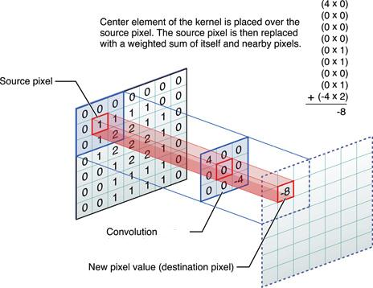
Convolution essentially replaces each pixel with a weighted sum of its neighbors. One needs to flip the kernel (filter) in both directions, pad the image with zeros, and slide the kernel across the padded image. For the odd-sized filters here, padding by half the kernel size on each side keeps the output the same size as the input.
The four-loop version visits every image pixel and every kernel element. The two-loop version visits the same image pixels but uses NumPy to multiply and sum the entire neighborhood at once. Both implement the same operation.
Four-loop implementation · NumPy only
def convolution_four_loops(img, kernel):
flipped = np.flip(kernel)
fh, fw = flipped.shape
padded = np.pad(img, ((fh // 2, fh // 2), (fw // 2, fw // 2)))
result = np.zeros(img.shape, dtype=np.float64)
for r in range(img.shape[0]):
for c in range(img.shape[1]):
for kr in range(fh):
for kc in range(fw):
result[r, c] += padded[r + kr, c + kc] * flipped[kr, kc]
return resultTwo-loop implementation · NumPy only
def convolution(img, kernel, padding_mode='constant', use_lib=False):
flipped = np.flip(kernel)
fh, fw = flipped.shape
padded = np.pad(
img, ((fh // 2, fh // 2), (fw // 2, fw // 2)), mode=padding_mode
)
result = np.empty(img.shape, dtype=np.float64)
for r in range(img.shape[0]):
for c in range(img.shape[1]):
window = padded[r:r + fh, c:c + fw]
result[r, c] = np.sum(window * flipped)
return resultHere is an example of applying the convolution to my selfie, with the kernel as the box, diff of x and diff of y filters. The box filter averages 81 pixels, softening small details. The difference filters respond to changes across columns and rows: Dx emphasizes vertical boundaries, while Dy emphasizes horizontal ones.
My implementation vs SciPy
I compare against convolve2d(image, kernel, mode='same', boundary='fill', fillvalue=0). Zero padding treats everything outside the image as black, so blur darkens the outer border and derivatives can detect the frame itself. Signed derivative images use middle gray for zero; lighter and darker pixels indicate opposite signs.
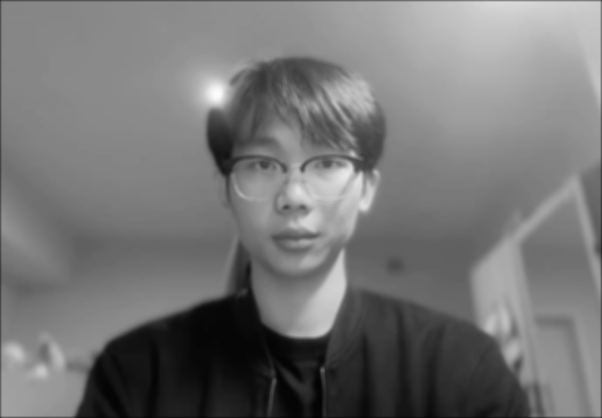
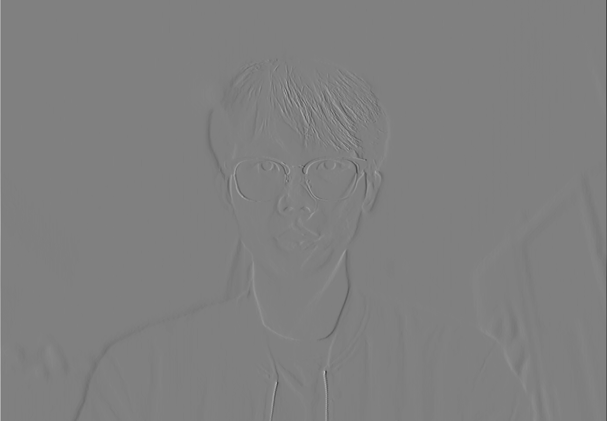
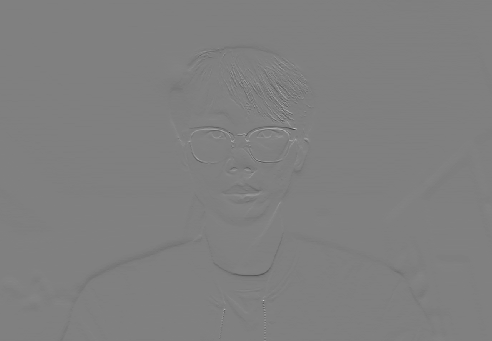


| Filter | Four loops | Two loops | SciPy |
|---|---|---|---|
| 9 × 9 box | 467.96 | 39.88 | 1.56 |
| Dₓ | 62.98 | 38.27 | 0.17 |
| Dᵧ | 66.75 | 39.01 | 0.32 |
Both of my 2 and 4 loop implementations have essentially the same result as SciPy qualitatively and quantitatively (the largest absolute error is below 8 × 10−16). Removing the inner Python loops helps most for the larger box filter, but SciPy is faster still because it performs the convolution in compiled code.
Finite Difference Operator
This part is trying to use the difference operators to find edges in an image. An edge is an area in the image where intensity changes quickly. To find this, I convolve the image with Dx and Dy to get the horizontal and vertical edges, then combine the two into a gradient magnitude. Finally, thresholding that magnitude gives a binary edge map. White for edges, black for non-edges.

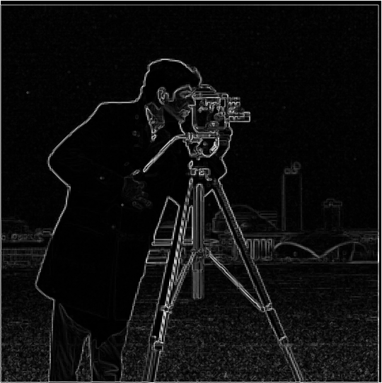
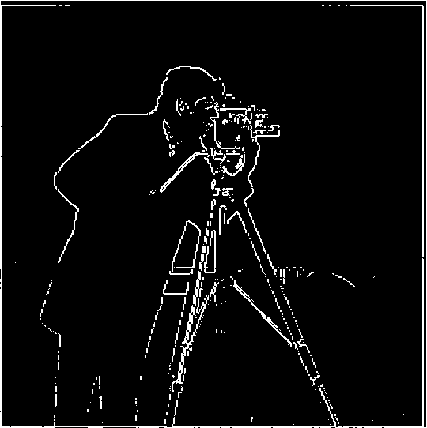
I use a threshold of 0.35 on intensities [0, 1] because I think the edges that matter here are the subject (cameraman, camera, tripod) and everything else is just stuff and noise (grass texture, background building). The tradeoff is that weaker background edges and some parts of the tripod disappear. Lowering the threshold would recover more of them, along with more noise.
Derivative of Gaussian (DoG) Filter
The problem with the previous approach is that finite differences responds to small intensity fluctuations. Thus, the motivating idea here is what if we smooth the image first then differentiate.
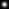
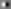
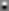
Convolution is associative, so I can instead convolve the Gaussian with each difference filter and apply the resulting derivative-of-Gaussian (DoG) kernel directly to the image. I use mode='full' when constructing these kernels so their support is not cut off. Note: middle gray denotes zero in the signed kernel visualizations.
Two steps: Gaussian, then finite differences
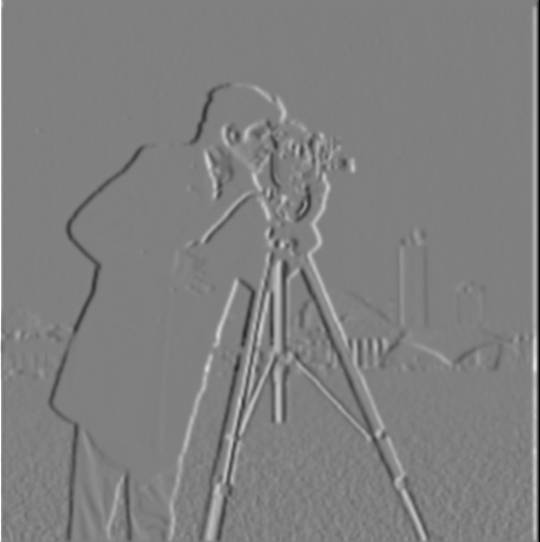
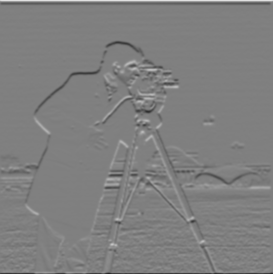
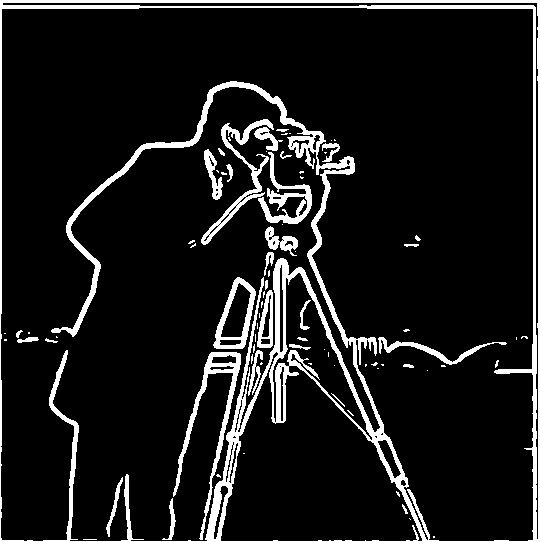
One step: derivative-of-Gaussian filters
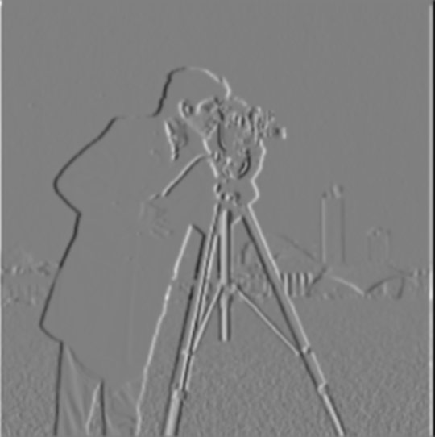
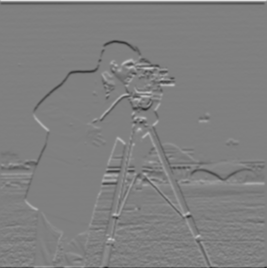
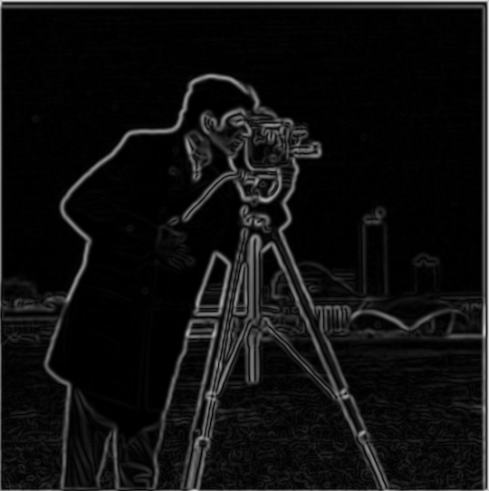
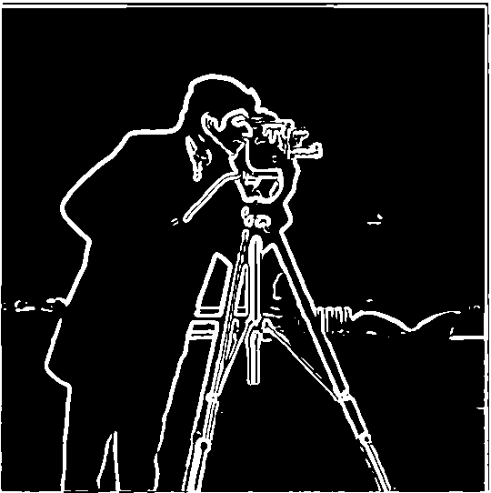
Compared with the raw finite differences, the smoothed edges are broader and more continuous, with less fine texture in the grass. I lower the threshold to 0.10 because smoothing also reduces gradient strength. This keeps the main silhouette and more of the horizon without bringing back all the original texture.
Why build a DoG filter? Simply because it shows that convolution is associative. One can precompute G * Dx and G * Dy and apply each filter in one pass. The derivatives match the blur-then-difference result in the image. But do note that a single dense DoG convolution may not be computationally cheaper.
Part 2 / Fun with frequencies
Image "Sharpening"
A Gaussian blur (also called a low pass filter) keeps smooth, low-frequency structure. Subtracting it from the original image isolates high frequencies, such as edges and fine texture. Unsharp masking adds a scaled version of that residual back to the original, making existing high frequencies more pronounced.
The last expression combines sharpening into one convolution: δ is an impulse kernel with a 1 at the center and 0 everywhere else. I apply the filter separately to R, G, and B, using the same 9 × 9 Gaussian as above, then clip the displayed result to [0, 1]. High-frequency panels are shown as H + 0.5, so zero detail appears gray.
Taj Mahal

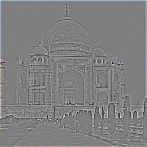
Another example: the building
The effect is most visible in the Taj Mahal’s carvings and the building’s stairs, paving, and bicycle. Sharpening raises local contrast around these structures, but it does not create new information.
What If We Keep Increasing Alpha
At α = 1, the edges become clearer without overwhelming the image. Larger values however, makes the images look increasingly harsher with stark bright and dark contrast.
Can Sharpening Undo Blur?
The cup rim and ice look crisper after sharpening, but they do not recover all the original texture. Remember, blurring smoothens high frequencies, and sharpening can only amplify what remains, it cannot reconstruct detail that was lost.
Hybrid Images
Now we come to my favorite part of this project: hybrid images! It essentially combines the low frequencies of one image with the high frequencies of another. This phenomena arises from the biology of our eyes, where up close we can focus on high frequency details better, and from a far lower frequencies dominate. Aligning corresponding features helps the two interpretations occupy the same place.
I use the supplied two-point alignment code to match centers, scale, and rotation, then crop to a common shape. The filters have configurable height and width set at 2⌊3σ⌋ + 1 (to make it odd). I also adjusted the final intensities of the low freq (0.8) and high freq (1.25) images to make the effect better. Further, I erode the nonzero support of the high-frequency source before combining it, which suppresses artificial edges introduced by its black alignment padding.
Derek + Nutmeg

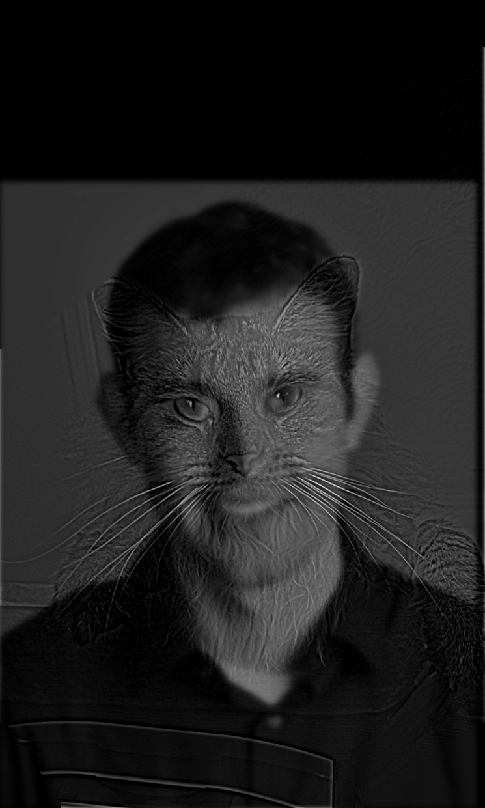
Nutmeg’s facial details overlay Derek’s smoother face. As seen above, one can view the cat up close and the human from a far.
Custom hybrid: Niki's change of expression
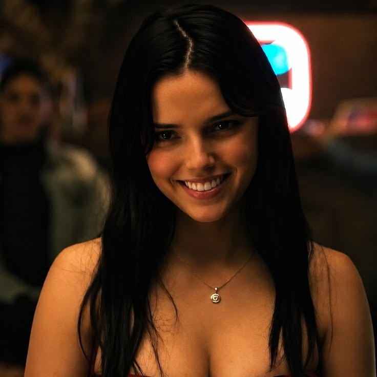
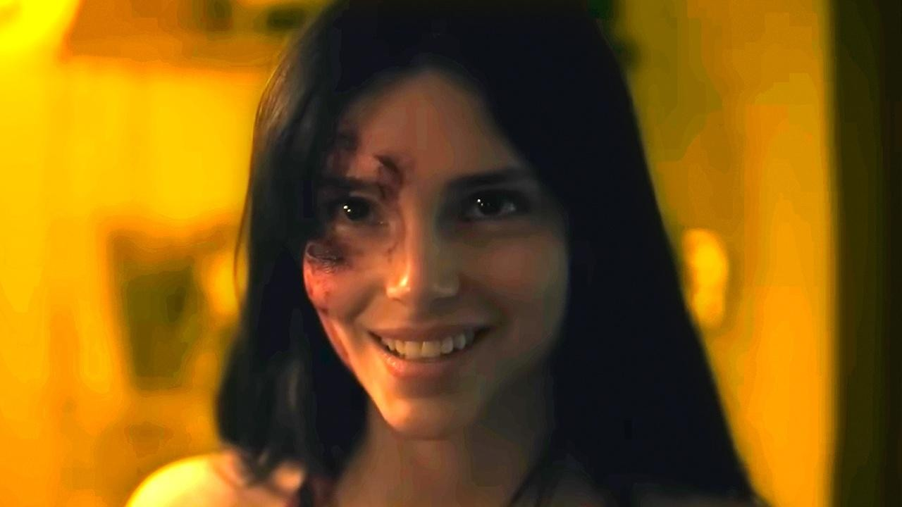
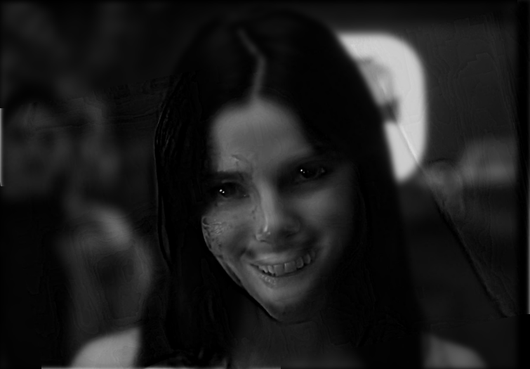
The eyes and mouth provide alignment. The high-frequency outlines (blood, soft smile) alter the expression at close range.
Custom hybrid: Ronaldo over time
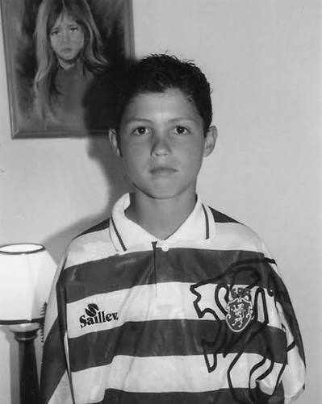
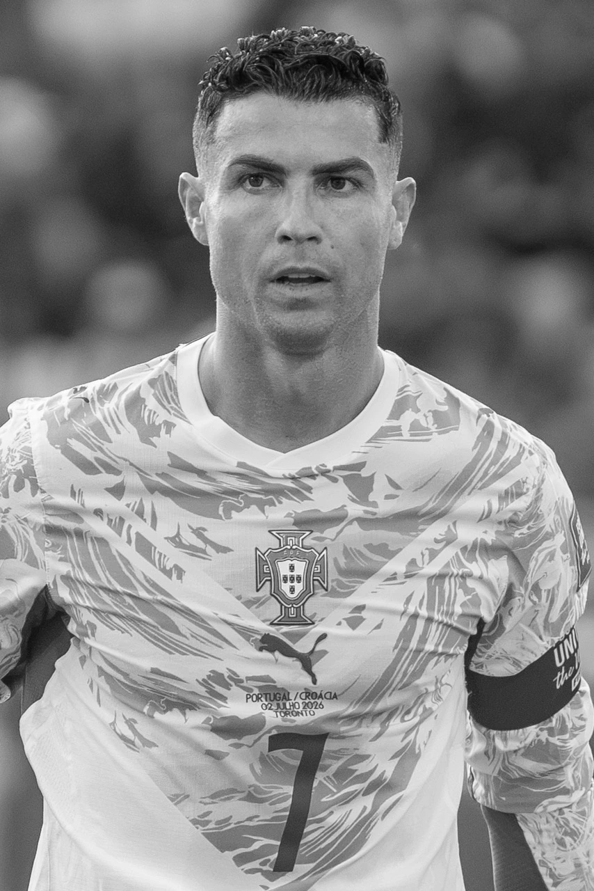
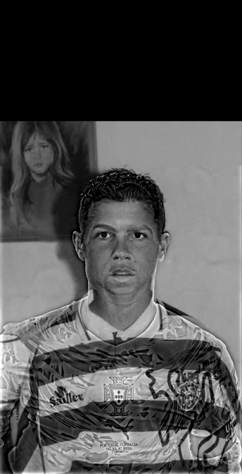
The small view approximates looking at the hybrid from farther away: fine details become harder to resolve, while the smoother younger face remains visible.
Alignment and filtering
For this result, σ₁ = 0.5 gives a 3 × 3 low-pass kernel, while σ₂ = 3 gives a 19 × 19 high-pass kernel. A larger Gaussian σ removes a wider range of detail from the low-pass image; in the high-pass branch, it includes more medium-scale detail in the residual. Here the small σ₁ preserves the younger face clearly, but also leaves more overlap between the two sources’ frequency bands.
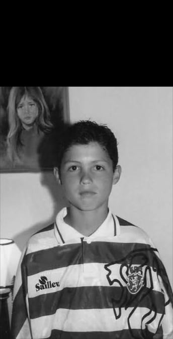
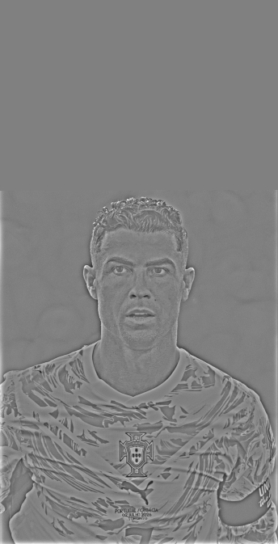
Looking at the Fourier spectra
I display log(1 + abs(fftshift(fft2(image)))); the +1 keeps zero-magnitude values finite. The center contains low frequencies, and distance from the center corresponds to higher frequencies. Each spectrum is independently scaled for display.
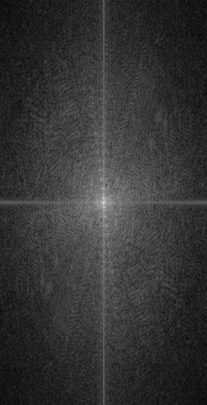
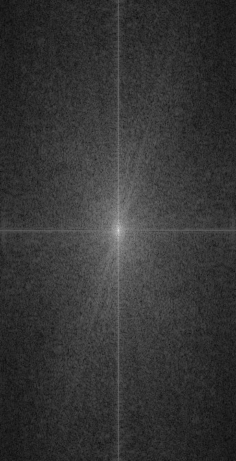
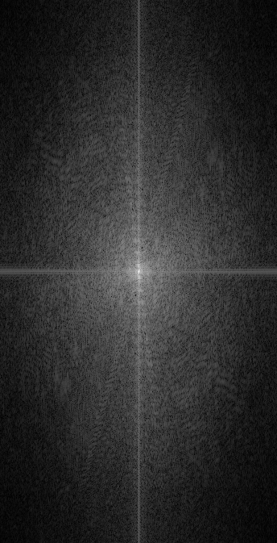
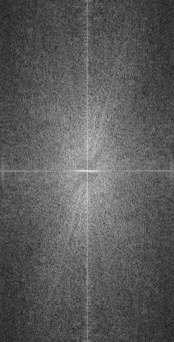
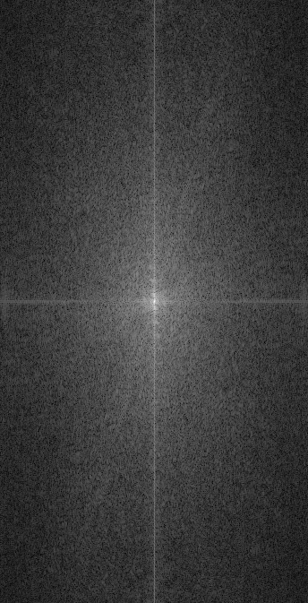
The low-pass spectrum remains concentrated near the center; the high-pass spectrum suppresses the center and retains more distributed detail. The hybrid contains both. Since σ₁ is only 0.5, its low-pass spectrum still resembles the input closely. The horizontal and vertical streaks also reflect image structure and the rectangular padding, not just the intended frequency split.
More experiments · houses and chernobyl scene
Architectural edges make the house pairs readable, but different roof shapes create visible ghosting. The street-and-fox pair is a weaker hybrid: the subjects occupy different regions and lack a shared silhouette, so it reads more like a double exposure.
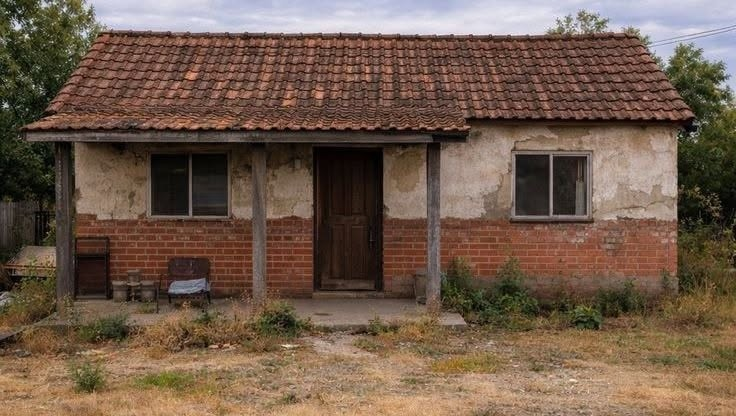
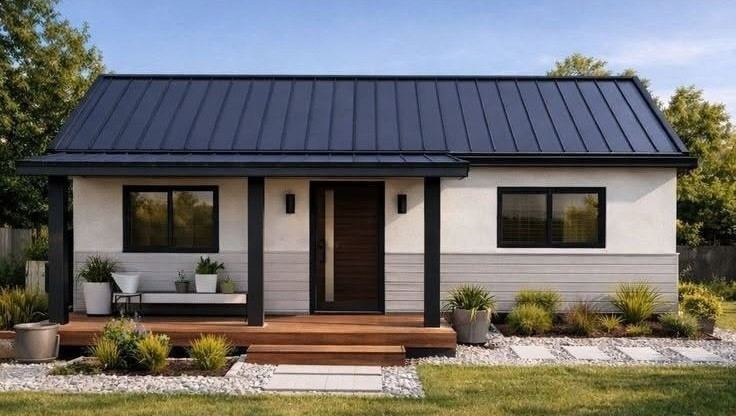
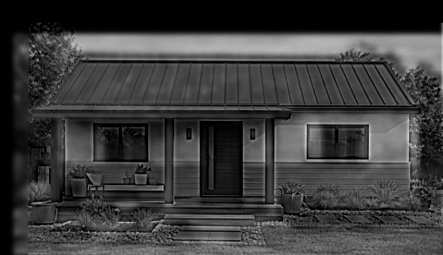
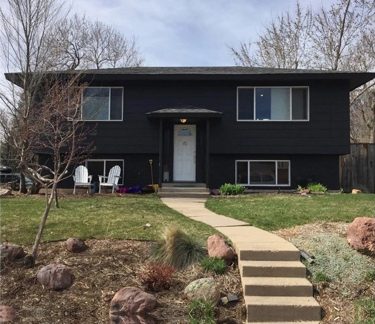
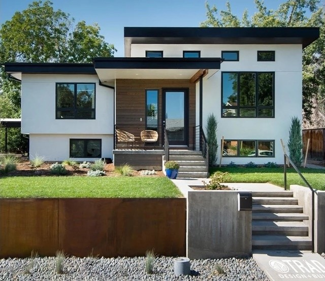
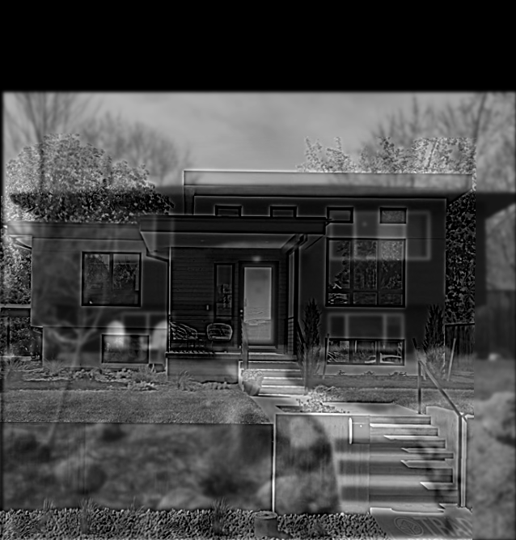
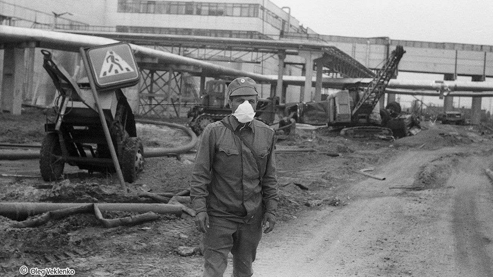
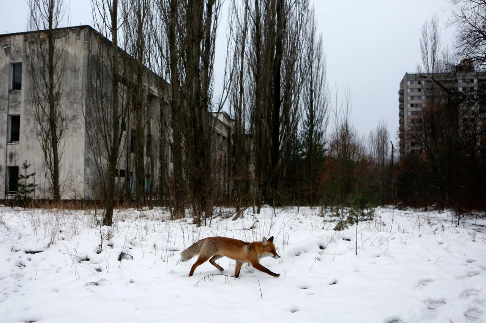
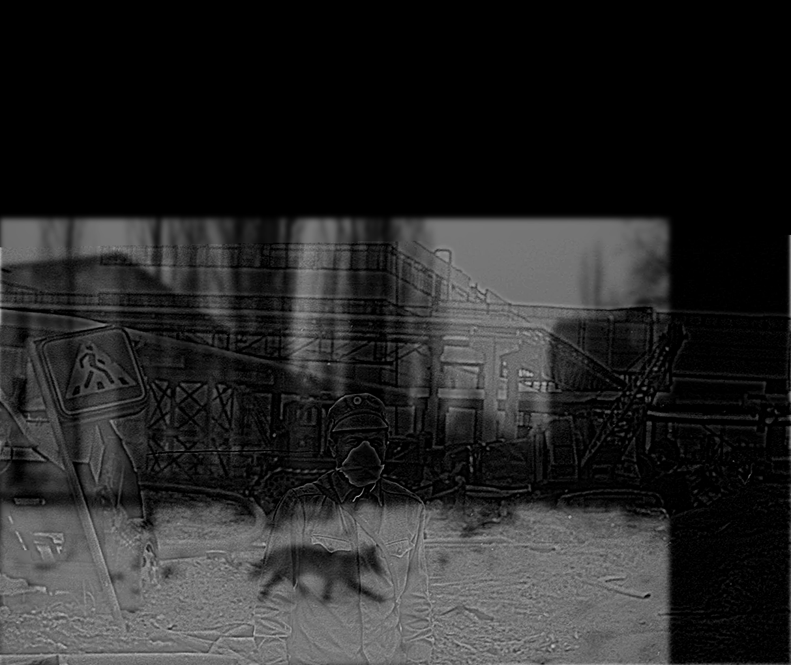
Gaussian and Laplacian stacks
A stack separates an image into scales without changing its dimensions. I start with G₀ = Im and successively blur the previous level with σ = 1, 2, 4, 8, and 16. Each blur is applied horizontally and vertically with a 1D Gaussian and mirrored boundaries (this is faster than applying a 2D Gaussian). There is no downsampling (unlike a laplacian pyramid).
Each Laplacian level contains what disappears between two successive Gaussian levels. The final level stores the remaining low-frequency image. Adding all six levels reconstructs the original.
Apple · Gaussian stack
Apple · Laplacian stack

Orange · Gaussian stack
Orange · Laplacian stack

Levels run from fine to coarse. Laplacian levels 0–4 are displayed with +0.5; the final residual is displayed directly. All levels remain 300 × 300 pixels.
Multiresolution Blending (a.k.a. the oraple!)
The motivating reason behind blending is that a direct cut between 2 images makes the color change obvious. Multiresolution blending makes that cut seamless. It blends the two images separately at each frequency band: narrow for fine texture, wider for large changes in color and illumination. To achieve this, I build Laplacian stacks for both images and a Gaussian stack for the mask.
White in the mask selects source A, black selects source B, and intermediate values mix them. The same mask is applied to each RGB channel. Because these are stacks, reconstruction is a sum over levels; no upsampling is needed.
The oraple


Blending keeps the apple and orange textures while spreading the color transition over a wider area. The two fruit silhouettes already line up well, which helps the seam disappear.
The mask gets smoother at each scale


Recreating Figure 3.42 (a)–(l)
The first three rows show masked apple, masked orange, and their sum at Laplacian levels 0, 2, and 4. Each row uses one shared symmetric display scale centered on gray so its three contributions can be compared. The last row sums all six levels, including the residual, to show each source’s reconstructed contribution and the final blend.


Custom blend 1 · Seattle meets the ocean


The top half comes from the skyline and the bottom half from the ocean. Coarse levels mix the warm sky and water colors, while finer levels retain the buildings and waves. The scene reads as a waterfront, although the lighting and perspective still reveal that the photographs came from different places.
Custom blend 2 · a red moon over the street


I translate the moon’s center from (397, 350) to approximately (533, 185) in the 800 × 739 image, then blend through a circular mask. Unlike a straight seam, the mask has a curved boundary. The blend softens the pasted disk, but the dark source sky still creates a halo around the red moon. This shows a limitation of blending: it smooths transitions without matching the two images’ illumination.
Moon blend · masked Laplacian contributions
As with the oraple, columns show the masked moon, masked street, and combined band. The bottom row reconstructs each contribution and the result from all six levels.


Reflection
The most important thing I learned is that an image’s identity and its fine detail can live at different scales. The same Gaussian filter that removes noise before edge detection also separates the pieces needed for sharpening, hybrid images, and blending.
I also learned that better filtering does not fix every mismatch. Sharpening cannot fully undo blur, hybrid images need compatible geometry, and a smooth blending mask cannot correct different lighting. The results work best when the filtering method and the input images support the same goal.